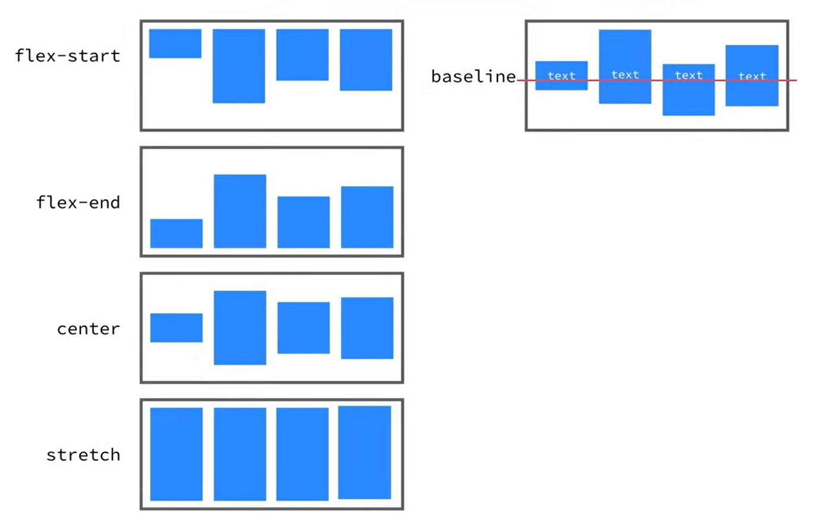

Flexbox
Flexbox atau Flexible Box Module adalah sebuah teknik CSS sejak tahun 2017 yang digunakan untuk membantu programmer dalam melayout atau megatur posisi sebuah halaman website.
Flexbox merupakan Model layout 1 dimensi yang dapat mengatur jarak dan penjajaran antar item dalam sebuah container. Flexbox hanya dapat mengatur 1 dimensi pada saat tertentu, antara baris atau kolom, tidak bisa keduanya sekaligus.
Flexbox Layout Module adalah sebuah modul yang menawarkan cara efektif untuk menyusun, mesejajarakan dan dan mendistribusikan jarak antar item di dalam sebuah container, meskipun ukurannya dinamis atau bahkan kita tidak tahu.
Dalam mempelajari flexbox akan sangat sering ditemukan suatu kondisi seperti gambar dibawah ini.
Pada gambar diatas terlihat 3 kotak sebagai items dan container sebagai pembungkus dari items hal ini adalah prinsip dan bentuk dasar dari flexbox. Berikut gambar lebih jelas terkait dengan gambar diatas.
Istilah pada Flexbox:
- main axis: Sumbu utama dari sebuah container yang menentukan urutan dari penempatan items secara horizontal.
- main-start | main-end: Mulai dan berakhirnya items yang disimpan di dalam container.
- main-size: Ukuran (width/height) dari container yang akan membuat dimensi dari items nya relatih terhadap size.
Property pada container
-
Display
.container { display: flex; }Membuat sebuah elemen parent menjadi flexbox, dan membuat elemen-elemen didalamnya bisa berperilaku flex juga.
Lihat Contoh -
Flex-direction
.container { flex-directon: row | row-reverse | column | column-reverse; }Flex direction memiliki default row, row-reverse berguna untuk mengurutkan dari paling belakang, column membuat elemen menjadi kolom, column-reverse membuatelemen menjadi kolom dan mengurutkan dari paling belakang.
Lihat Contoh -
Flex-Wrap

.container { flex-wrap: nowrap | wrap | wrap-reverse; }Secara default, semua items di dalam container akan berada pada satu baris meskipun ukurannya sudah tidak cukup, wrap memungkinkan untuk memindahkan items ke baris di bawahnya
Lihat Contoh -
Justify-content
.container { justify-content: flex-start | flex-end | center | space-between | space-around | space-evenly; }Justify-content berguna untuk mengatur rata dari elemen-elemen yang ada di dalam container atau pembungkusnya. Value flex-start adalah default value dari justify-content
Lihat Contoh -
Align-items
.container { align-items: flex-start | flex-end | center | stretch | baseline; }align-items berguna untuk mengatur rata dari elemen-elemen yang ada di dalam container atau pembungkusnya secara vertikal. Mengatur perilaku penjajaran items terhadap cross axis
Lihat Contoh -
Align-content

.container { align-content: flex-start | flex-end | center | stretch | space-between | space-around; }Mengatur jarak antar items terhadap cross axis (hanya berfungsi ketika items lebih dari 1 baris)
Lihat Contoh